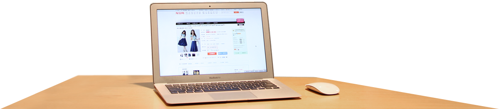

上面为 kinMaxShow 扩展效果，模仿支付宝首页的焦点图(前段时间支付宝使用的，不知道现在还是不是这种，另外支付宝的这个焦点图动画效果是分浏览器的，IE8及以下浏览器无动画纯静态，只是在谷歌、火狐等现代浏览器才会出现动画。上例kinMaxShow仿的支付宝demo 不分浏览器。) 这只是kinMaxShow扩展的一个小例子更多效果你可以自己发挥。 代码如下：
javascript 代码
<script src="js/jquery-1.10.2.min.js" type="text/javascript"></script> <script src="js/jquery.kinMaxShow-1.0.min.js" type="text/javascript"></script> <script type="text/javascript"> $(function(){ $("#kinMaxShow").kinMaxShow({ //设置焦点图高度(单位:像素) 必须设置 否则使用默认值 500 height:400, //设置焦点图 按钮效果 button:{ //设置按钮上面不显示数字索引(默认也是不显示索引) showIndex:false, //按钮常规下 样式设置 ，css写法，类似jQuery的 $('xxx').css({key:value,……})中css写法。 //【友情提示：可以设置透明度哦 不用区分浏览器 统一为 opacity，CSS3属性也支持哦 如：设置按钮圆角、投影等，只不过IE8及以下不支持】 normal:{background:'url(images/button.png) no-repeat -14px 0',marginRight:'8px',border:'0',right:'44%',bottom:'20px'}, //当前焦点图按钮样式 设置，写法同上 focus:{background:'url(images/button.png) no-repeat 0 0',border:'0'} }, //焦点图切换回调，每张图片淡入、淡出都会调用。并且传入2个参数(index,action)。index 当前图片索引 0为第一张图片，action 切入 或是 切出 值:fadeIn或fadeOut //函数内 this指向 当前图片容器对象 可用来操作里面元素。本例中的焦点图动画主要就是靠callback实现的。 callback:function(index,action){ switch(index){ case 0 : if(action=='fadeIn'){ $(this).find('.sub_1_1').animate({left:'70px'},600) $(this).find('.sub_1_2').animate({top:'60px'},600) }else{ $(this).find('.sub_1_1').animate({left:'110px'},600) $(this).find('.sub_1_2').animate({top:'120px'},600) }; break; case 1 : if(action=='fadeIn'){ $(this).find('.sub_2_1').animate({left:'-100px'},600) $(this).find('.sub_2_2').animate({top:'60px'},600) }else{ $(this).find('.sub_2_1').animate({left:'-160px'},600) $(this).find('.sub_2_2').animate({top:'20px'},600) }; break; case 2 : if(action=='fadeIn'){ $(this).find('.sub_3_1').animate({right:'350px'},600) $(this).find('.sub_3_2').animate({left:'180px'},600) }else{ $(this).find('.sub_3_1').animate({right:'180px'},600) $(this).find('.sub_3_2').animate({left:'30px'},600) }; break; } } }); }); </script>
HTML 代码
<div id="kinMaxShow"> <div> <!--这是焦点图大图图片，下面为动画元素所需图片--> <img src="images/demo_extend_images/1.jpg" /> <!--如果需要附加内容在焦点图内部 需要用一个div包裹起来，如下面标红div所示，否则kinMaxShow会解析混乱--> <div> <img class="sub_1_1" src="images/demo_extend_images/sub_1_1.png" /> <img class="sub_1_2" src="images/demo_extend_images/sub_1_2.png" usemap="#Map_1_2" border="0" /> <!--此处焦点图上面的局部链接 可不用图片热区链接，可用普通a链接实现，偷个懒 (: --> <map name="Map_1_2" id="Map_1_2"> <area shape="rect" coords="2,96,106,123" href="http://www.lanrentuku.com" target="_blank"/> </map> </div> </div> <div> <img src="images/demo_extend_images/2.jpg" /> <div> <img class="sub_2_1" src="images/demo_extend_images/sub_2_1.png" /> <img class="sub_2_2" src="images/demo_extend_images/sub_2_2.png" usemap="#Map_2_2" border="0" /> <map name="Map_2_2" id="Map_2_2"> <area shape="rect" coords="3,97,104,124" href="http://www.lanrentuku.com" target="_blank"/> </map> </div> </div> <div> <img src="images/demo_extend_images/3.jpg" /> <div> <img class="sub_3_1" src="images/demo_extend_images/sub_3_1.png" /> <img class="sub_3_2" src="images/demo_extend_images/sub_3_2.png" usemap="#Map_3_2" border="0" /> <map name="Map_3_2" id="Map_3_2"> <area shape="rect" coords="1,98,106,124" href="http://www.lanrentuku.com" target="_blank"/> </map> </div> </div> </div>
CSS样式
<style type="text/css"> #kinMaxShow{display:none;} #kinMaxShow .sub_1_1{ display:block; position:absolute;left:110px; top:136px;} #kinMaxShow .sub_1_2{ display:block; position:absolute;left:110px; top:120px;} #kinMaxShow .sub_2_1{ display:block; position:absolute;left:-160px; bottom:0px;} #kinMaxShow .sub_2_2{ display:block; position:absolute;left:110px; top:20px;} #kinMaxShow .sub_3_1{ display:block; position:absolute;right:180px; bottom:0px;} #kinMaxShow .sub_3_2{ display:block; position:absolute;left:30px; top:40px;} </style>